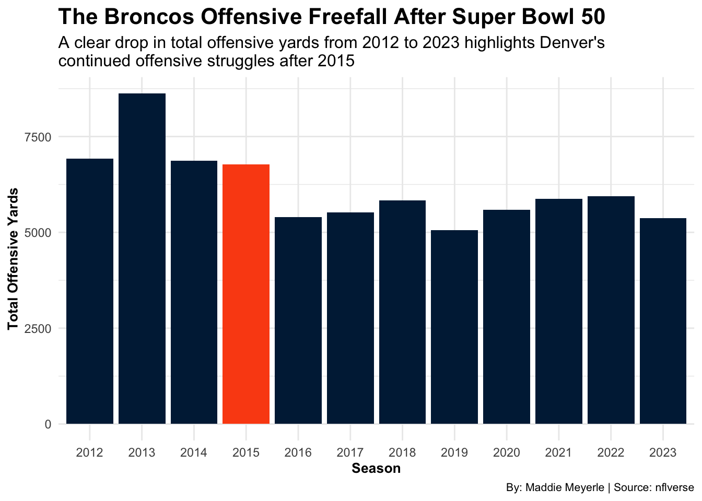
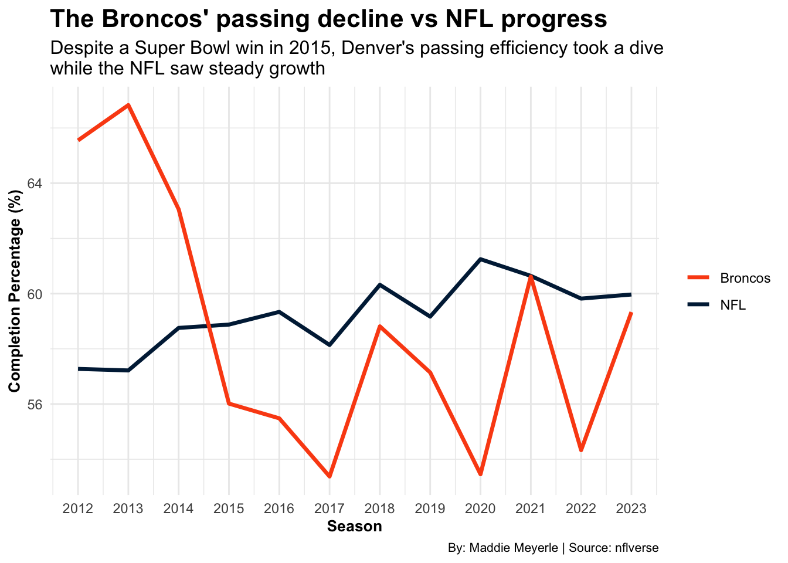

The Denver Broncos have been a rollercoaster ride for the last decade. From the high of winning Super Bowl 50 with Peyton Manning in 2015 to the frustration of the ongoing eight-year playoff drought, it’s hard to ignore the apparent contrast. Manning’s final season was a fairytale ending for one of the greatest quarterbacks ever to play the game, but after he left, it feels like the magic disappeared.
If you’re a Broncos fan, you know exactly what I’m talking about. Sure, they’ve had some moments, but overall? It’s been a long, tough stretch. But here’s the thing–when you really break down the numbers, it’s even worse than it seems. So, let’s dive into some stats and see how much the Broncos’ offense has struggled since Super Bowl 50.
Let’s start with the offensive yards because, let’s face it, that’s the heart of the game. If we look at the data, there’s a vast difference between before and after 2015. Check out the bar chart below, showing the total offensive yards for the Broncos from 2012 to 2023. Notice the massive spike in 2013? A whopping 8622 yards, and you know what? That was Peyton Manning in his prime. The offense was in sync, the weapons fired, and everything clicked.
Then, it’s like someone flipped a switch. After Super Bowl 50, the Broncos’ offensive yards just plummeted. Even though Manning was still playing in 2015 and the team was fresh off a Super Bowl win, the offense started to struggle. And, the numbers haven’t really bounced back.
The numbers don’t like. Manning’s departure left a gaping hole in Denver’s offensive play. That 2013 peak was the high point; since then, it’s been all downhill. And we’re not just talking about a slight dip–this is a dramatic drop in offensive production.
If the drop in total offensive yards wasn’t a big enough pill to swallow, the Broncos’ passing efficiency tells an even bigger story. Despite the Super Bowl win, Denver’s passing game sharply declined from 2014 to 2015, which became even more apparent after Manning’s retirement.

Here’s the thing: Manning, nearing the end of his career, wasn’t the same quarterback as he was in his prime. Sure, the Broncos’ stellar defense stepped up in a big way that season, playing a massive role in the win. But the offense was no longer what it once was, and as Manning’s time with the team came to a close, the Broncos were left searching for the following offensive identity.
Since Manning’s retirement, the Broncos have cycled through quarterbacks in an attempt to find a leader who could recapture the offensive spark of the past. From Trevor Siemian to Case Keenum, Joe Flacco to Drew Lock, and eventually Teddy Bridgewater and Russell Wilson, it has been a revolving door of quarterbacks, each one offering brief glimpses of hope before falling short.
Let’s take a closer look at how Denver’s quarterbacks have fared since Manning. Below is a table of key players who have led the Broncos offense from 2012-2023. As you’ll notice, Manning’s success stands out clearly from the others. Even though quarterbacks like Rusell Wilson were expected to be
| A decade of quarterback changes in Denver | |||
|---|---|---|---|
| Inconsistent quarterback play in the aftermath of Manning's retirement | |||
| Player | Record | Touchdowns | Interceptions |
| Peyton Manning | 50-14 | 140 | 53 |
| Trevor Siemian | 13-11 | 30 | 24 |
| Case Keenum | 6-10 | 18 | 15 |
| Joe Flacco | 2-6 | 6 | 5 |
| Drew Lock | 8-13 | 25 | 20 |
| Teddy Bridgewater | 7-7 | 18 | 7 |
| Russell Wilson | 11-19 | 42 | 19 |
By: Maddie Meyerle | Source: Sports-Reference.com |
|||
The team has cycled through quarterbacks, each offering glimpses of hope but needing more stability to bring the Broncos back to playoff contention. Even with a proven veteran like Russell Wilson, the offense has struggled to regain the spark it had in Manning’s prime. It’s been a tough stretch for Denver, and finding a leader at quarterback remains the key to their future success.
But the future may not be as bleak as it seems. Bo Nix, a promising young quarterback, could be the answer the Broncos have been looking for. With his strong rookie performance, Nix represents the hope that Denver’s search for stability at the position might finally come to an end.
While it’s too early to make any definitive conclusions, Nix’s early signs of success suggest that he might be the quarterback who can finally turn things around for the Broncos. With the right development, he could be the player who brings the team back into playoff contention and restores hope for the future.